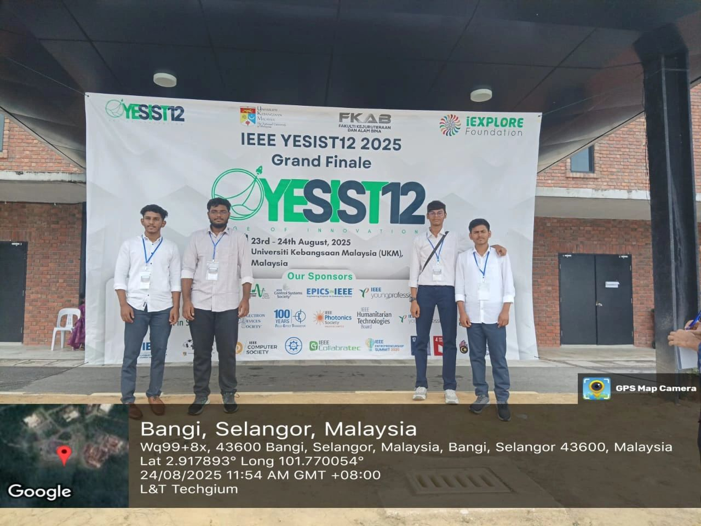
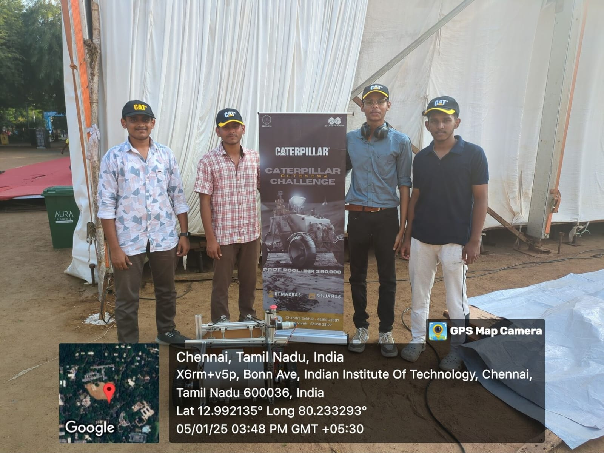

Events & Experiences
Moments from hackathons, competitions, workshops, and robotics events

TN Skills 2025 – Level 3

IEEE YESIST12 Grand Finale 2025 – Malaysia 🇲🇾

SHAASTRA 2025 – Caterpillar Autonomy Challenge